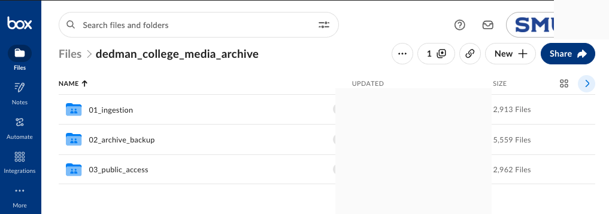
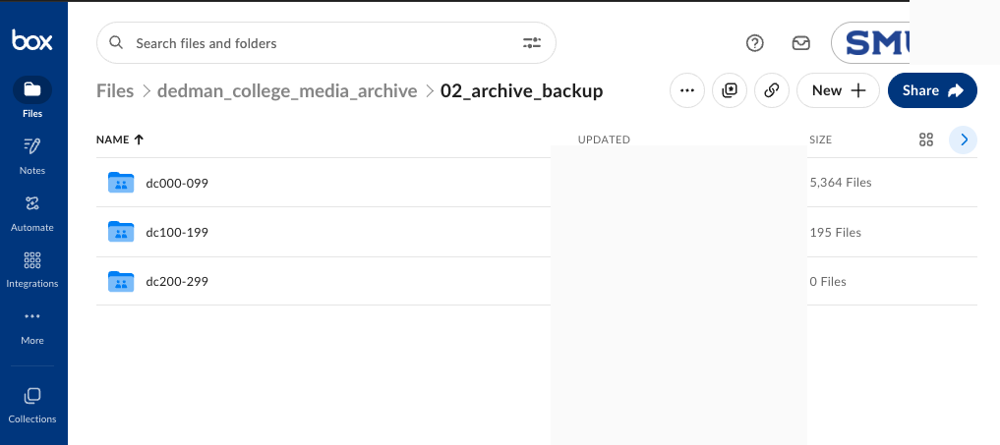
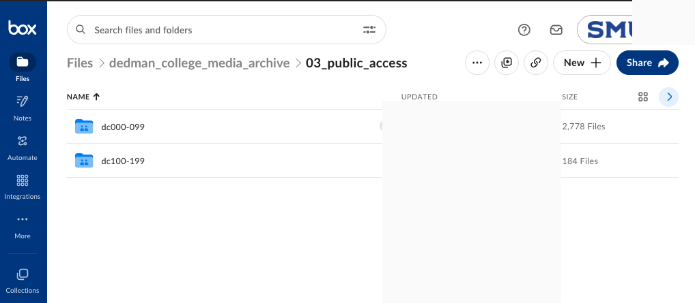
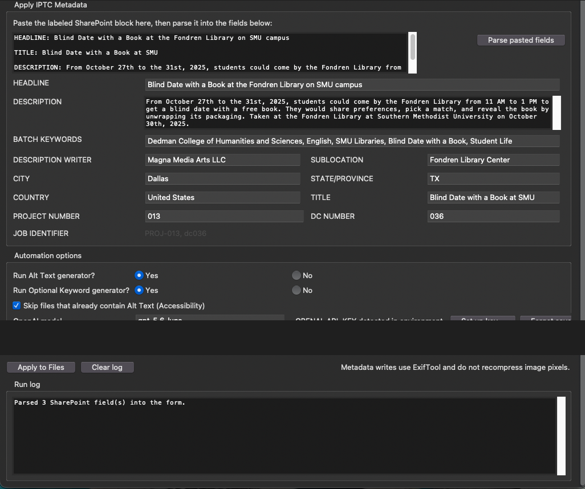
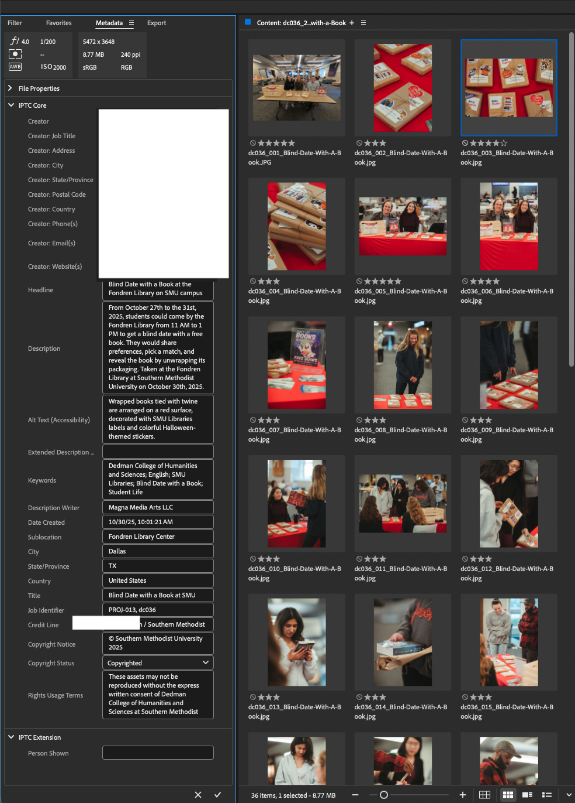
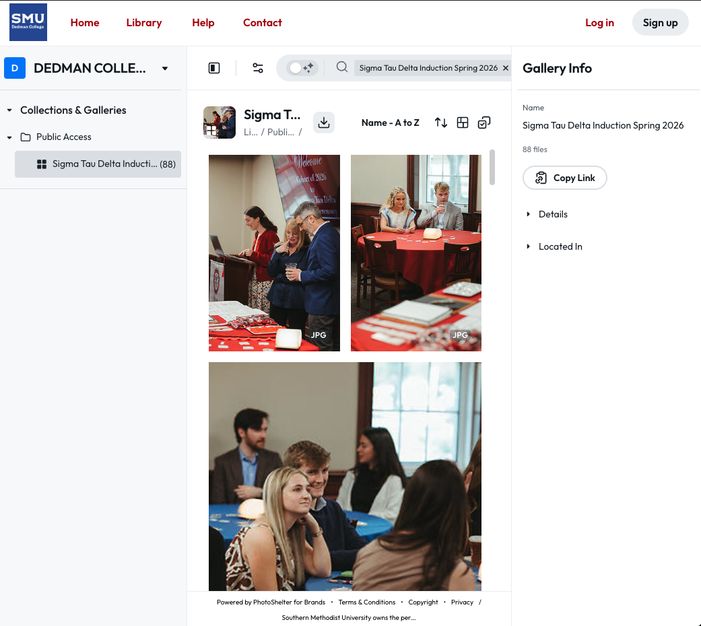
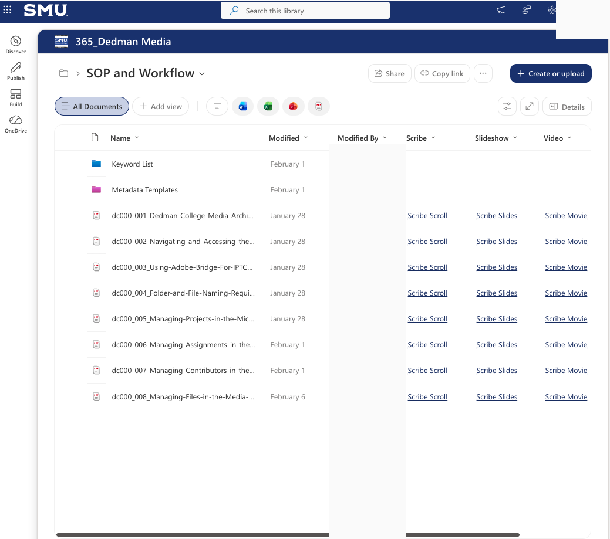

01
Overview
Dedman College needed an operating model for media that could carry an assignment from request through production, metadata preparation, quality control, secure archiving, and public discovery. I designed and implemented the archive and catalog as an interconnected workflow instead of a collection of folders and ad hoc handoffs.
The result combines a SharePoint catalog, linked project and assignment records, controlled metadata practices, Adobe Bridge quality control, a tiered Box archive, PhotoShelter delivery, and visual SOPs that make the system usable by people with different levels of technical experience.
02
Problem or research question
College media work spans events, portraits, editorial content, video, graphics, and external contributors. Without shared identifiers, metadata standards, ownership rules, or a clear archive lifecycle, assets become hard to find, difficult to reuse, and risky to publish or maintain.
03
Context and role
I created the archive’s information architecture and operational workflow for SMU Dedman College of Humanities and Sciences. My role covered the SharePoint catalog design, project and assignment schema, contributor records, naming standards, folder structure, metadata requirements, quality-control process, AI-assisted metadata workflow, archive delivery model, and documentation.
This case study uses sanitized evidence. It shows the system design and public-facing media examples while excluding credentials, internal links, records, and private operational details.
04
Approach and workflow
- Structure the work. A project record groups a larger initiative; assignment records carry individual shoot, delivery, status, ownership, and archive information.
- Standardize early. Naming rules, folder templates, job identifiers, contributor roles, and required metadata establish a dependable handoff before assets enter the archive.
- Prepare and validate metadata. Reviewed intake records support structured IPTC/XMP entry, accessibility descriptions, controlled keywords, copyright information, and publication readiness.
- Apply human quality control. Adobe Bridge is used to audit descriptive fields, accessibility text, keyword relevance, ratings, and metadata completeness before files advance.
- Preserve and deliver deliberately. Files move through separate ingestion, archive-backup, and public-access areas. Public-facing assets are copied rather than removed from preservation storage.
- Enable and improve. Visual SOPs, templates, and shared resources help contributors use the workflow consistently while supporting ongoing platform and process improvements.
05
Tools and technologies
06
Governance, accessibility, and quality
The workflow treats multimedia management as a service, not a one-time upload. Project and assignment records capture phase, responsibilities, archive location, delivery status, and quality-control sign-off. Metadata standards distinguish assignment-level description from image-specific alt text, require approved keywords, connect assets to persistent identifiers, and preserve copyright and usage information.
Human-in-the-loop by design
AI can assist with draft descriptions, accessibility text, and image-specific keyword suggestions, but it does not silently become authoritative metadata. Structured intake is reviewed before automation, and final metadata is checked again in Adobe Bridge before publishing or archival completion.
07
Results and operational value
- Created a centralized media catalog that connects production context to stored and publicly delivered assets.
- Established repeatable operating procedures for project management, contributor administration, file naming, metadata entry, archive handling, and team access.
- Separated preservation storage from public-access copies, supporting more intentional version control and delivery.
- Made accessibility, controlled vocabulary, metadata quality, and copyright treatment explicit parts of the content lifecycle.
- Provided training resources and templates that reduce dependence on individual memory and make the workflow easier to sustain.
08
System evidence

Archive lifecycle



Metadata quality and public delivery




09
Challenges and decisions
- Cross-platform continuity: each platform has a distinct role, so identifiers and status fields create continuity without requiring one tool to do everything.
- Discoverability versus privacy: the archive separates internal preservation from public-access copies and limits editing access to authorized participants.
- AI reliability: assisted outputs remain drafts and exceptions remain visible for editorial review.
- Adoption: the system is supported by templates, visual documentation, and role-based guidance rather than assuming every contributor is a metadata specialist.
10
Future improvements
- Finish and maintain the PhotoShelter publishing guide as the delivery workflow evolves.
- Introduce a recurring quality-audit cadence for metadata completeness, links, versions, and public-access accuracy.
- Expand performance and user-feedback measures to identify where training, templates, or automation can reduce friction.
- Continue improving the metadata workflow with comparison views, test coverage, and richer controlled-vocabulary review.